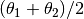
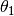
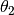

Sky2Pix_ConicOrthomorphic¶
-
class
astropy.modeling.projections.Sky2Pix_ConicOrthomorphic(sigma=90.0, delta=0.0, **kwargs) [edit on github][source]¶ Bases:
astropy.modeling.projections.Sky2PixProjection,astropy.modeling.projections.ConicConic orthomorphic projection - sky to pixel.
Corresponds to the
COOprojection in FITS WCS.See
Conicfor a description of the entire equation.The projection formulæ are:
where:
Parameters: sigma : float
, where  and  are the latitudes of the standard parallels, in degrees. Default is 90.
delta : float
 , where and
are the latitudes of the standard parallels,
in degrees. Default is 0.
, where and
are the latitudes of the standard parallels,
in degrees. Default is 0.Attributes Summary
param_namesMethods Summary
evaluate(phi, theta, sigma, delta)Attributes Documentation
-
param_names= ('sigma', 'delta')¶
Methods Documentation
-
classmethod
evaluate(phi, theta, sigma, delta) [edit on github][source]¶
-